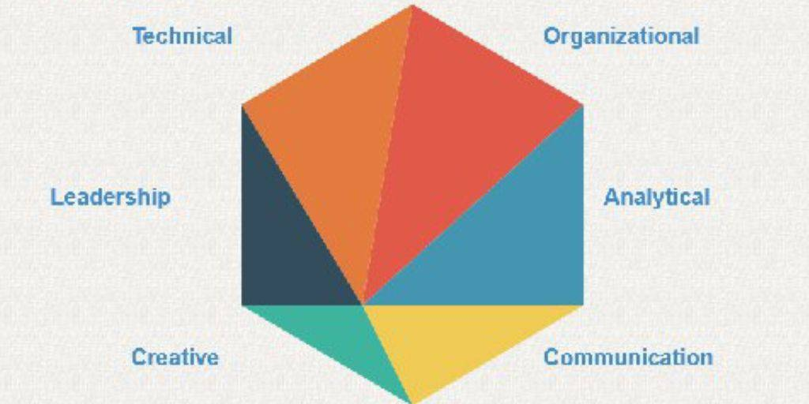

About Me!
My name is Christina Abdallah and I grew up in Qraye, a small town in South Lebanon. Technology has always been an area of interest for me, particularly Artificial Intelligence (AI). Reading books of all genres and listening to music are two passions that have shaped my life. Currently, I am studying Computer Science at the American University of Science and Technologyin Saida-Lebanon with an expected graduation date of 2025. In addition to this degree program, I also hold an official Lebanese Baccalaureate in Sociology and Economics from "École Notre Dâme de Machmouche Jezzine".
I am a highly skilled individual, possessing proficiency in Windows, Microsoft Word, PowerPoint and Excel as well as social media platforms such Facebook, Twitter and Instagram. I have great attention to detail which allows me to be creative with my work. Additionally I am methodical in my approach when making mistakes; planning ahead is part of how I manage time effectively while following instructions precisely. My organizational skills are also beneficial for resource identification purposes whilst being analytical allows me solve problems logically by learning from them and applying mathematics where necessary. Furthermore my communication skills enable me to build relationships easily through effective dialogue while fluency in Arabic (native), English & French further enhances this ability.